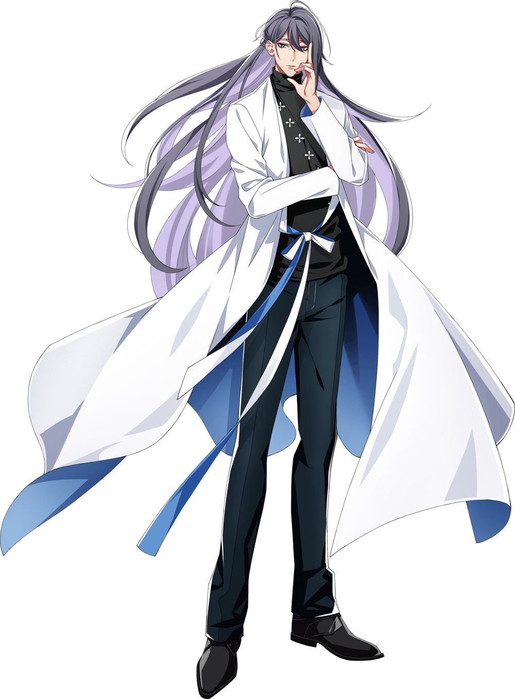
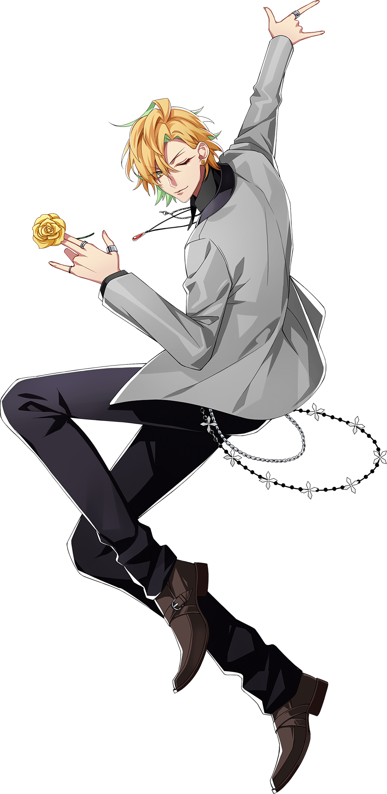
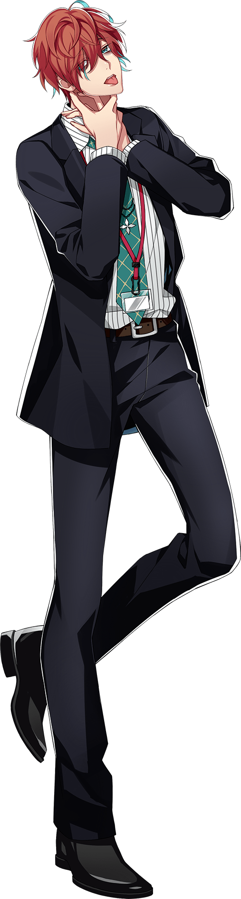

Matenrou (麻天狼) is the Shinjuku Division representative rap group. The team consists of the
salaryman Doppo Kannonzaka, host Hifumi Izanami,
and their leader, Dr. Jakurai Jinguji.
Their mysterious atmosphere and unique rhythm attract others with an outstanding flow. Representing Shinjuku,
the city that never sleeps.
Jakuraki Jinguji

Jakurai Jinguji, a.k.a. ill-DOC, is a doctor, former member of Kujaku Posse and The Dirty Dawg and the
current leader of Matenrou.
He is a genius doctor, once under contract to eliminate terrorists, he became a doctor to atone for his
sinful way of life. Though he often
goes to areas of conflict around the world, he is currently practicing at the Shinjuku Central Hospital.
His drinking habits are terrible, and once he drinks, he goes on a rampage with an Edo dialect.
He has a cat and dog relationship with Ramuda, leader of the Shibuya
Division.
“ The sole meaning of life is to serve humanity. ”
Solos
Hifumi Izanami

Hifumi Izanami, a.k.a. GIGOLO, is a host and the second member of Matenrou.
A host who works at the "Fragrance" host club in Shinjuku, Hifumi radiates confidence and charisma at first
sight. However, despite
the impression that his gregarious nature and carefree tone gives off, Hifumi is in actuality completely
terrified of women.
He became a host in attempts to conquer his fear, and after much toil, he learned to transform himself into
a womanizer once he dons his suit.
Hifumi is extremely dexterous and has a wide range of hobbies ranging from the indoor to the
outdoor.
He and Doppo have known each other since they were in elementary school, and he frequently mends Doppo’s
torn suits for him. The two share an apartment.
“ Today is the first day of the rest of your life. ”
Solos
Doppo Kannonzaka

Doppo Kannonzaka, a.k.a. DOPPO, is a salaryman and the third member of Matenrou.
A sales representative at the E.L. Medical Co., Ltd, a manufacturer of medical equipment, whose most notable
characteristic
is that he has no notable characteristics.
He’s a pessimist and thinks about everything in a negative light, so friends are not exactly something he
has in spades.
In fact, Hifumi Izanami is his only friend, and they’ve been close ever since elementary school.
Despite the number of awful situations he’s found himself in because of Hifumi, he’s still glad to have him
around.
“ The real world is much smaller than the imaginary. ”
Solos